Guitar
With over 10 years of experience playing guitar across various genres, I bring energy and precision to every performance. Whether it's in the studio or on stage, I deliver high-quality guitar tracks that complement any production. From rhythm to lead, let's make your music shine.
 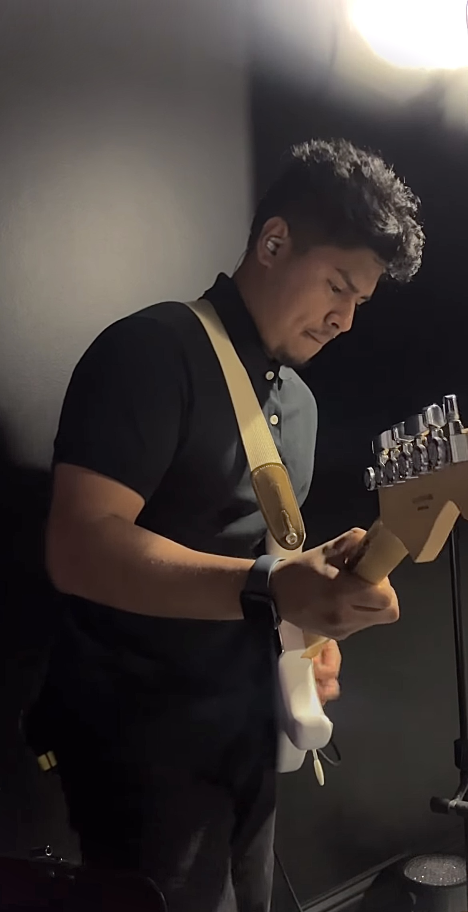
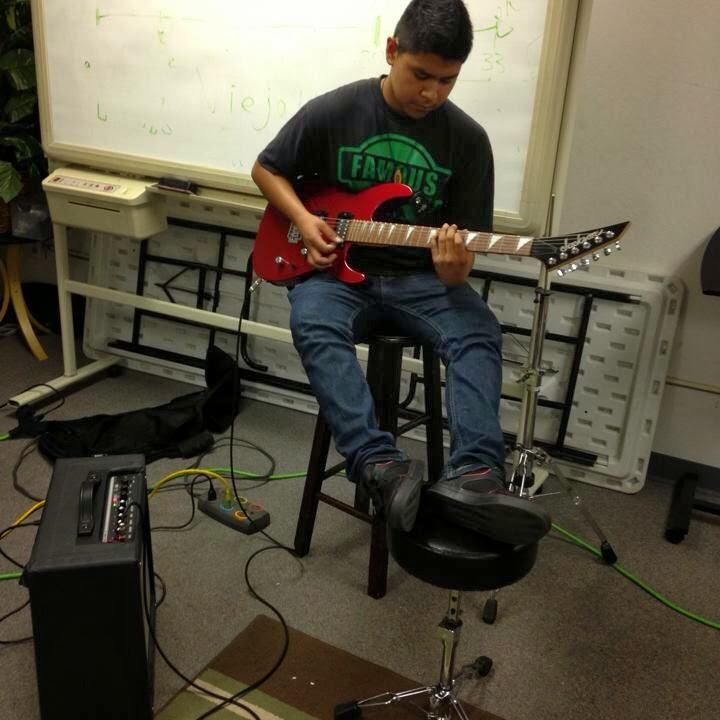
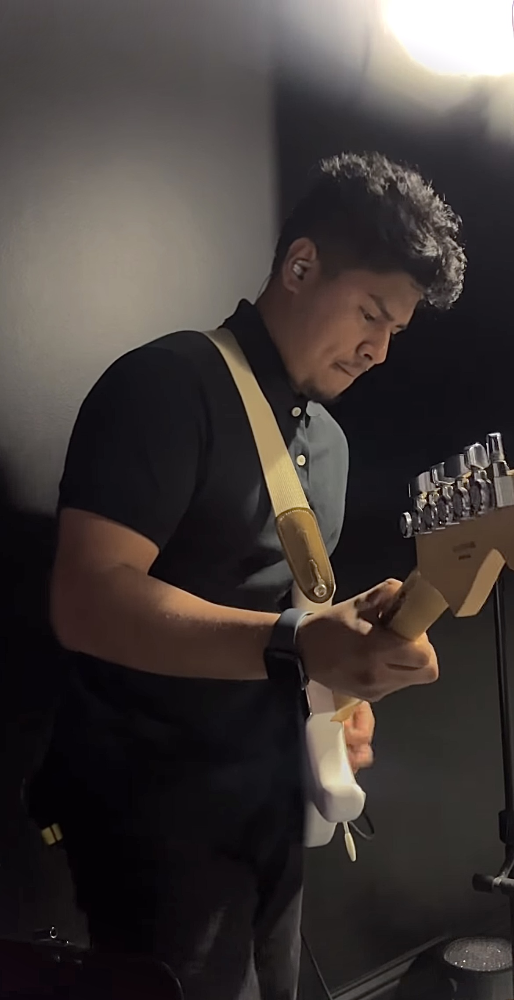
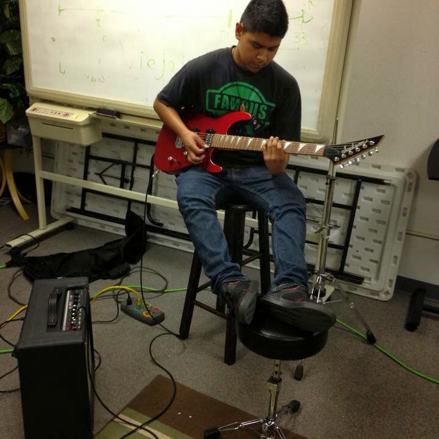
 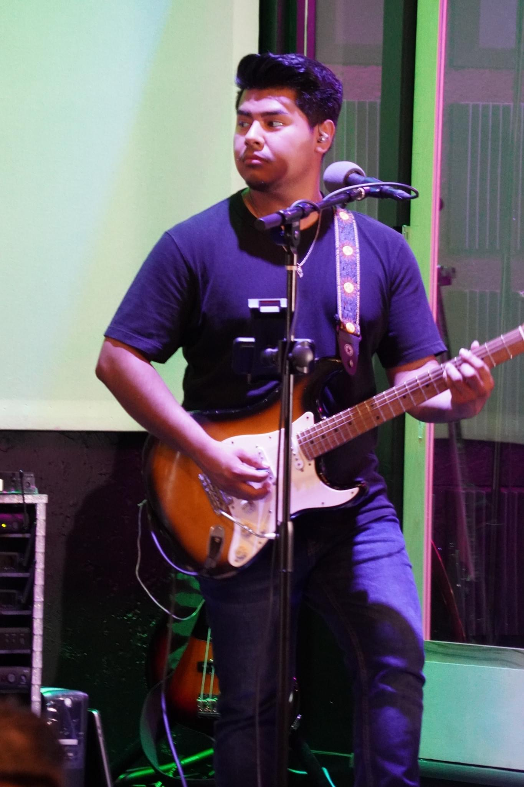
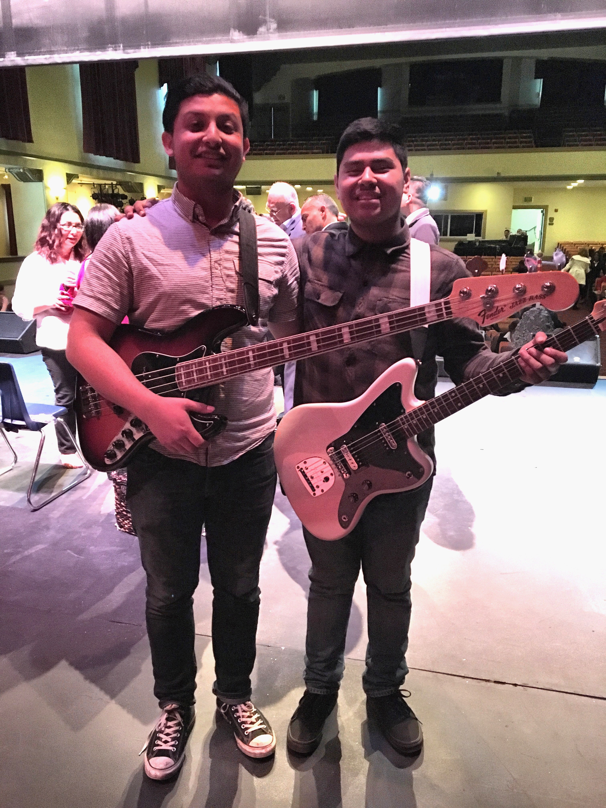
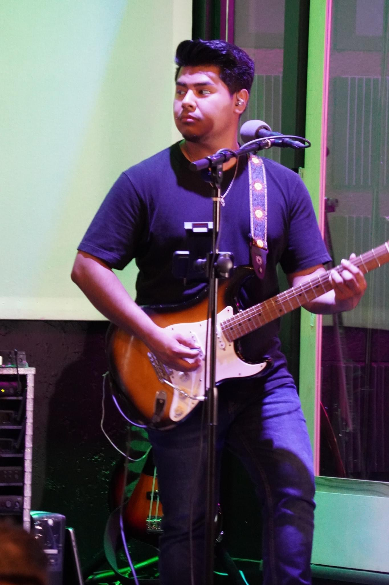
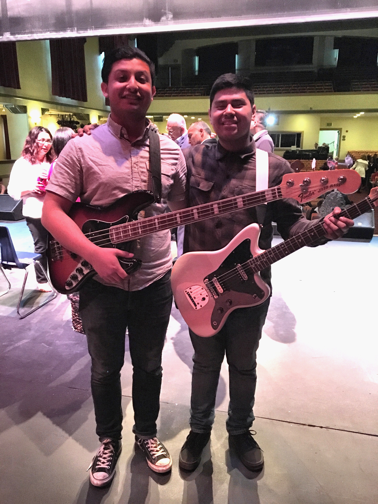
Bass
As a bassist with a deep understanding of rhythm and groove, I bring a powerful foundation to every track. Whether you're looking for a subtle bass line or an energetic performance, I create bass tracks that elevate your sound. Let’s create the perfect groove for your project.
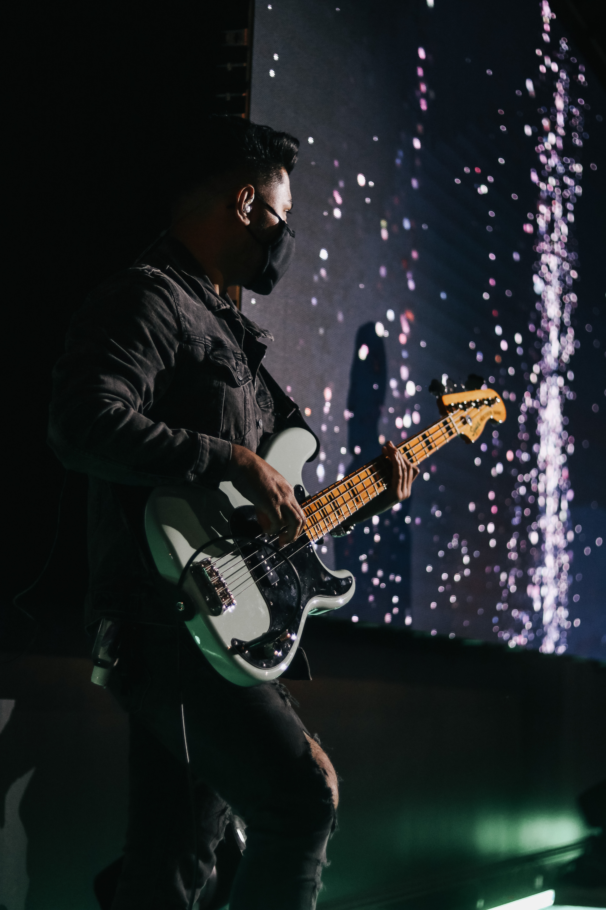
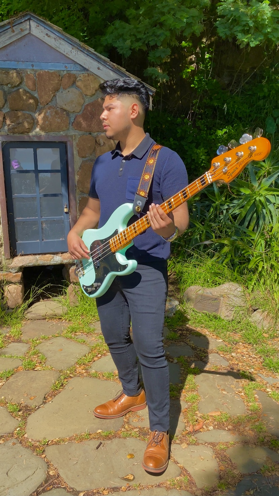
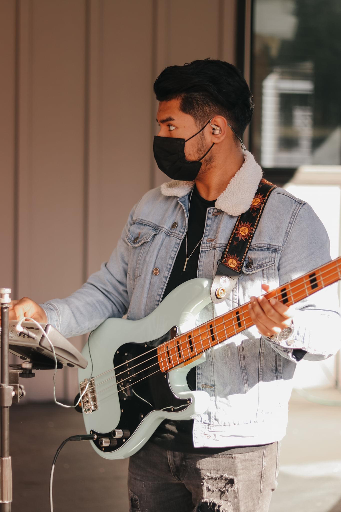
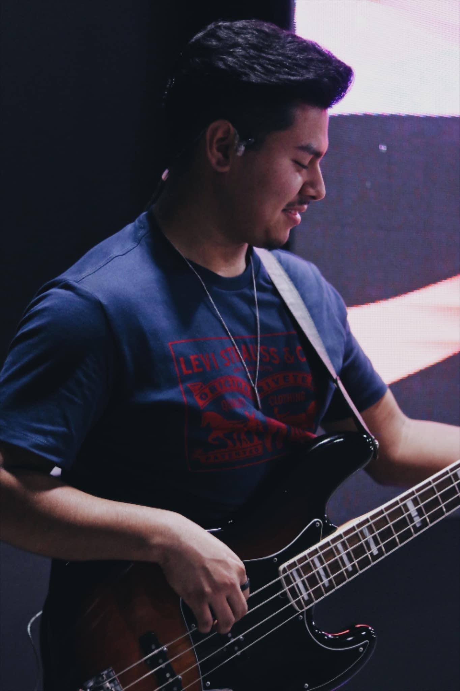
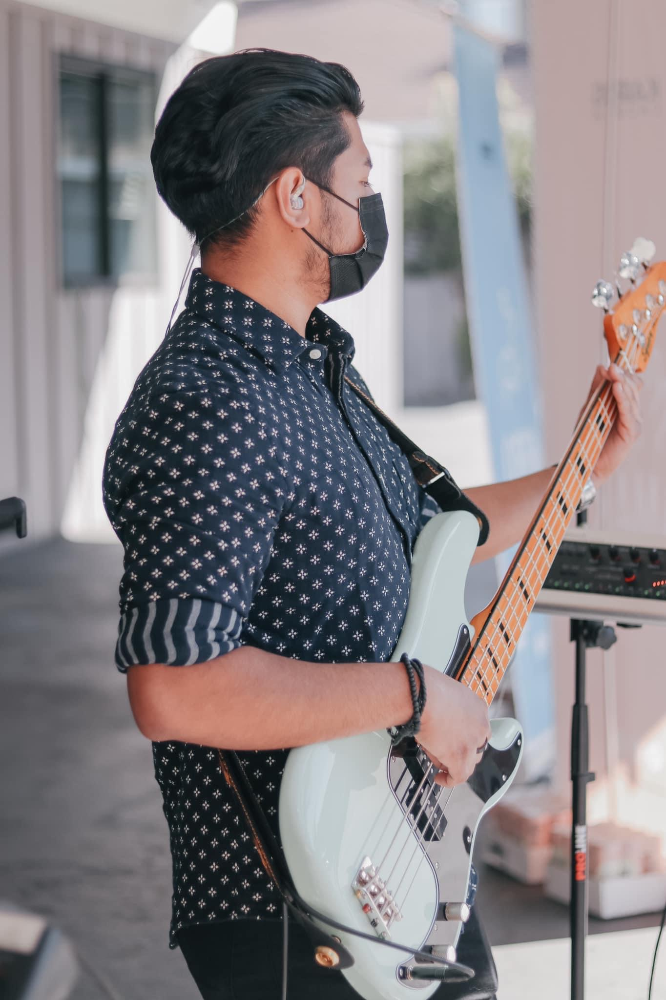

My Videos
Check out some of my latest performances and projects. These videos showcase my passion for music and creativity in action.